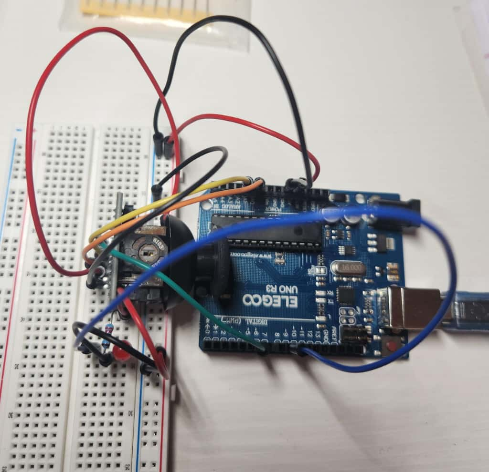
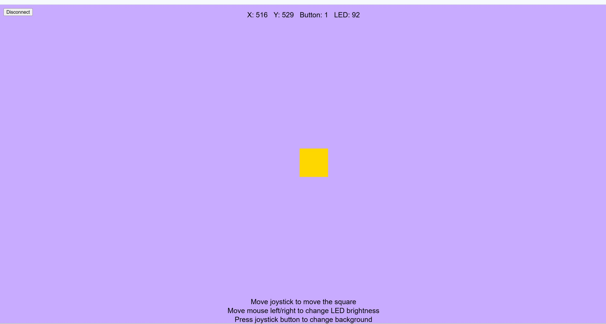
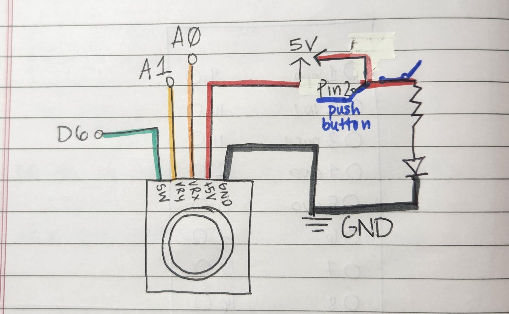

Assignment 6: Talking to the Web!!
Click here to open my a6 webpage.

Here is the picture of my circuit. At first I had added the joystick in a vertical positon on my breadboard - meaning i was shortcircuiting it. It would work with the LED
but when i connected the joystick to the arduino, it wouldn't turn on the arduino when plugged in to the port.
After realizing this mistake, I rotated it to a horizontal position and the wiring worked great!

Here is a screenshot of what the webpage looks like.

Here is the gif of my circuit. The joystick controls the golden square by moving on the x and y axis. Pushing down causes the color to change. And finally
moving the mouse sends an output back to the led and changes its brighntess based on the x position of the mouse.

Here is the picture of my schematic. The reason I used the 220 resistor for the LED was using ohms law which I previously calcualted to need 160 ohmz, And
220 was the closest resistor I had
Firmware-Code from Arduino IDE
// This code is for the aruino to run on and then use for the webpage. It is to read the joystick left, right, up, down, and pressed values, and send it to webpage.
// It is to also then read the LED values from webpage and sends it back using serial monitor.
//Referencing: https://projecthub.arduino.cc/hibit/using-joystick-module-with-arduino-0ffdd4
const int x_pin = A0; //x axis is connected to analog pin 0
const int y_pin = A1; //y axis is connected to analog pin 1
const int press_pin = 6; //push button is connected to digital pin 6
const int led_pin = 9; // LED is an output connected to PWM pin D9
void setup() {
Serial.begin(9600); //intializing to set up the serial monitor using the baud value on screen
pinMode(press_pin, INPUT_PULLUP); //setting the input pull-up on joy stick and having it as an input (pressed = 0, not pressed = 1)
pinMode(led_pin, OUTPUT); // setting the LED pin as an output
}
void loop() {
int xValue = analogRead(x_pin); //reading joystick X axis from 0 to 1023
int yValue = analogRead(y_pin); //reading joystick Y axis from 0 to 1023
int buttonState = digitalRead(press_pin); //reading joystick button pressed from 0 to 1
//Printing the data using serial monitor to p5.js
Serial.print(xValue); //xvalue
Serial.print(",");
Serial.print(yValue); //yvalue
Serial.print(",");
Serial.println(buttonState); //buttonstate
//Recieving the data using serial monitor back from p5.js
if (Serial.available() > 0) { //making sure it's within the range for LED brightness starting from 0
int brightness = Serial.parseInt(); //parsing the number
brightness = constrain(brightness, 0, 255); //constraining to avoid outliers
analogWrite(led_pin, brightness); //controlling the LED brightness
}
//Pause
delay(20);
}
Webpage's p5.js code
// This sketch uses p5.serialport to communicate with an Arduino. It controls what happends when the joystick is moved and button is pressed, as well as the
// LED brightness based on mouse position.
const BAUD_RATE = 9600; // Serial baud rate
let port; //global varaible for serial port
let connectBtn; //golbal variable for connect button
//recieving joystick values from Arduino
let joyX = 512; // X axis (0–1023)
let joyY = 512; // Y axis (0–1023)
let joyButton = 1; //default is 1 - not pressed
let ledBrightness = 0; //default LED brightness to send back to ardunio
function setup() {
createCanvas(windowWidth, windowHeight); //creating the canvas the size of the window
setupSerial(); //start serial setup
textAlign(CENTER, CENTER); //direcitons text is centered
textSize(20); //directions text size
}
function draw() {
//In case the port is not open
const portIsOpen = checkPort();
if (!portIsOpen) {
return;
}
let line = port.readUntil("\n"); //reading one line in the form of xvalue,yvalue,buttonvalue
if (line.length > 0) { //making sure line is not empty
line = line.trim(); // removing whitespace/newline characters
let parts = line.split(","); // splitting the line into parts based on commas
if (parts.length === 3) { //making sure we have three values
joyX = int(parts[0]); //integer for x value
joyY = int(parts[1]); //integer for y value
joyButton = int(parts[2]); //integer for button value
}
}
// Because of the joystick orientation, i mapped the joyY to left/right and joyX for up/down for screen coordinates
let xPos = map(joyY, 0, 1023, 0, width);
let yPos = map(joyX, 0, 1023, height, 0);
//color of background (light purple or dark purple) based on button press
if (joyButton === 0) {
background(80, 0, 120); //dark purple when pressed
} else {
background(200, 170, 255); //light purple when not pressed
}
//drawing the shape to move with joystick
noStroke(); //remove stroke
fill(255, 215, 0); //color gold (tried to do uw colors here :)
square(xPos - 40, yPos - 40, 80); //drawing square centered at joystick position with size 80
// Draw text values for coordinates, button state, and led brightness to display at the top
fill(0);
text(
"X: " + joyX + //x state
" Y: " + joyY + //y state
" Button: " + joyButton + //button state
" LED: " + ledBrightness, //led brightness state
width / 2, 30
);
//directions text at the bottom
text("Move joystick to move the square", width / 2, height - 60);
text("Move mouse left/right to change LED brightness", width / 2, height - 35);
text("Press joystick button to change background", width / 2, height - 10);
}
//Three helper functions taken from example code for serial communication
//Function opens port and creates connect button
function setupSerial() {
port = createSerial();
// Try to connect and ports we have used already
const usedPorts = usedSerialPorts();
if (usedPorts.length > 0) {
port.open(usedPorts[0], BAUD_RATE);
}
// Create a connect button
connectBtn = createButton("Connect to Arduino");
connectBtn.position(10, 10);
connectBtn.mousePressed(onConnectButtonClicked);
}
//Function opens port and creates connect button
function checkPort() {
if (!port.opened()) {
// if port is not opend, change button text and show directions
text("Click 'Connect to Arduino' to start", width / 2, height / 2);
connectBtn.html("Connect to Arduino");
//return a gray background
background("gray");
return false;
} else {
// connected
connectBtn.html("Disconnect");
return true;
}
}
//Function runs when conncet button is clicked
function onConnectButtonClicked() {
if (!port.opened()) {
port.open(BAUD_RATE); //open port if closed
} else {
port.close(); //close port if open
}
}
// Sending LED brightness to Arduino based on mouse movement
function mouseMoved() {
if (!port || !port.opened()) { //check if port is open and do nothing if it is not
return;
}
ledBrightness = int(map(mouseX, 0, width, 0, 255)); // Map mouseX to LEDbrightness (0–255)
port.write(ledBrightness + "\n"); // Send brightness as a line of text to Arduino
}